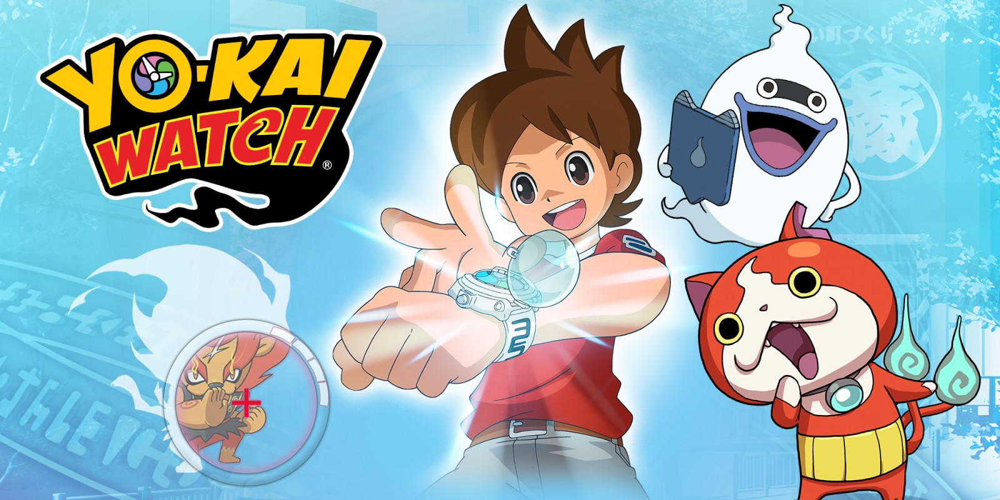
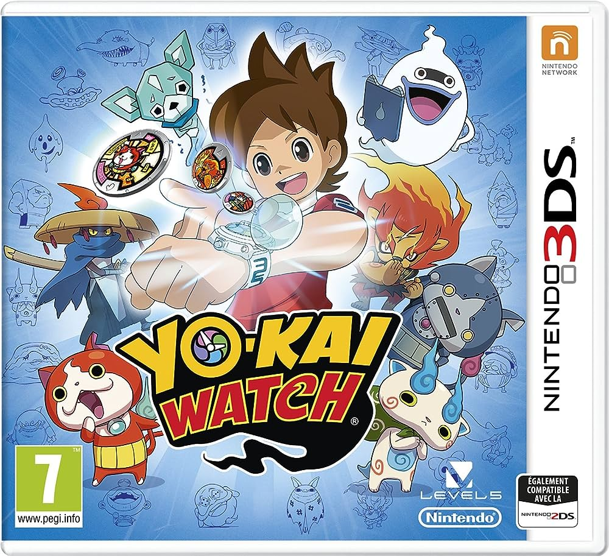

Yo-Kai Watch est une franchise japonaise populaire qui comprend des jeux vidéo, des séries animées et des mangas. Le joueur utilise une montre spéciale pour découvrir et capturer des Yo-Kai, des esprits invisibles.
Jibanyan est un Yo-Kai de type Chat qui est très populaire et adorable.
Komasan est un Yo-Kai de type Lion-chien. Il est connu pour sa nature naïve et son accent régional.
La série Yo-Kai Watch comprend plusieurs jeux vidéo, disponibles sur différentes plateformes comme la Nintendo 3DS et la Nintendo Switch.
